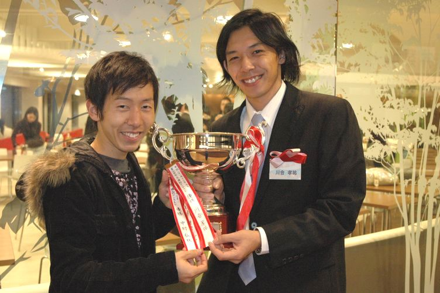
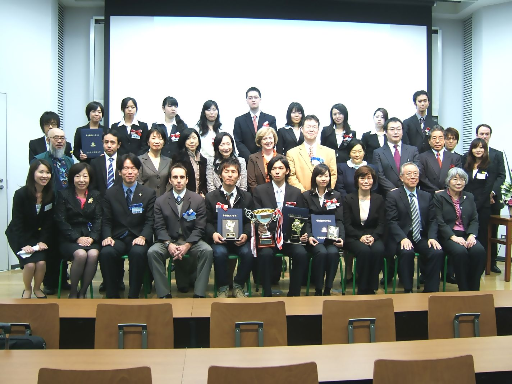
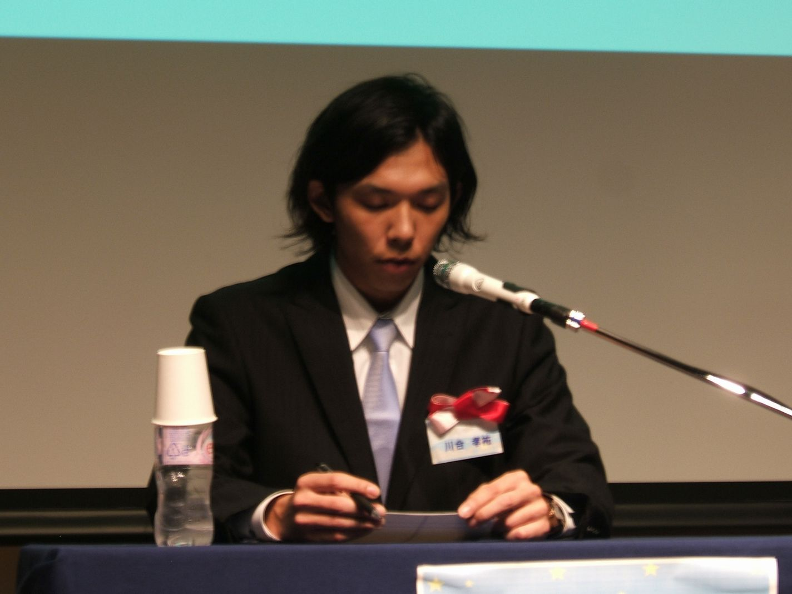

第3回学生通訳コンテストを実施しました！本学学生 の川合孝祐君が優勝！！
第3回学生通訳コンテストを12月5日に実施しました。12大学から各1名の学生が 出場し、「グローバル化の中での裁判員裁判制度」のトピックについて日本語から英語、英語から日本語への逐次通訳を行い、競いました。優勝は名古屋外国語 大学4年の川合孝祐さん、準優勝は神戸市外国語大学4年の大西亮平さん、第3位は東京外国語大学3年の廣瀬まり奈さんで、The Japan Times週刊ST賞は金城学院大学4年の武藤康代さんが受賞しました。下記の文書は、本学学生の川合孝祐君からのコメントです。

【右側】第3回学生通訳コンテスト優勝者 川合 孝祐 名古屋外国語大学4年
【左側】第1回学生通訳コンテスト優勝者 中村 弘秋 名古屋外国語大学卒業生
通訳コンテストから得たもの
現代英語学科4年
川合 孝祐
まず始めに、今回の通訳コンテストに関わったすべての方々にこの場を借りてお礼を言いたいと思います。浅野先生を始め、お忙しい中トレーニングを
してくださった先生方、長期間に渡る準備や当日の運営をしてくださった現代国際学部事務室のみなさんとICCサークルのメンバー、そして応援してくれた家
族、友人には本当に感謝しています。この1つでも欠けていれば今回の優勝はなかったと思うのと同時に、その御恩を最良の形でお返し出来たことを非常に嬉し
く思っています。本当にありがとうございました。

【第3回学生通訳コンテスト集合写真】
今回のコンテストのテーマは「日本と英国における司法制度について」という一見難しそうなものだったため、そこに入り込むまでに時間がかかりましたが、
一度入ってしまえば、わりと身近な問題も多く、非常に興味深いものでした。司法制度は私たちの生活とは切っても切り離せないものであり、特に今年導入され
た裁判員制度についてはこれからも注目していかなければならない問題だと強く感じました。勉強を始めるにあたって今回気付いたことは、日頃からニュースや
新聞、書籍などを通してある程度の知識があれば、より早くスムーズにテーマに入り込めただろうということです。通訳において、言語運用能力はもちろんです
が、ありとあらゆることへの興味や、その知識を日常的に身につけておくことの必要性も痛感しました。
ここでは、コンテストのテーマや通訳の技術などについてではなく、コンテスト出場に至るまでの気持ちの持っていき方や、準備についてお話したいと思いま
す。コンテストと聞くと、人前だとか緊張というイメージを抱く人が多いと思います。簡単に、やろうと決断できるものでもありません。しかし、偉そうなこと
を言える立場ではありませんが、何かにチャレンジするきっかけはどんなことだっていいと思います。どんな理由であれ、やらないよりやったほうが得られるも
のも多く、成長できるものです。
僕の場合は、2年前、通訳研究会（ICCの前身）でお世話になっていた先輩が第一回のコンテストで優勝したのを見て、次元が違うとは思いながらもただ憧
れ、自分もそうなりたいと思い、1年間のアメリカ留学が決まっていた僕は、「留学から帰ったら通訳コンテストに出るから」と、軽い気持ちで周りに宣言した
ことが最初のきっかけでした。しかし、いざ帰国すると不安になり、自信もなく、何度も出場するのをやめようかと考えました。そんな時に浅野先生から今年6
月の東京外大主催の通訳コンテストの出場者に推薦していだたきました。ただ逃げてしまうことは簡単でしたが、周りに宣言してしまったということや自分自身
成長したいと思う気持ち、そして何よりも自分を信頼して推薦してくださったという事実から出場を決めました。残念ながら東京外大では入賞することはでき
ず、NUFSの代表として非常に情けない思いでした。ただ、実際に出場したという事実だけで自信がついたことはもちろん、今後の自分自身にとっての課題を
前向きにとらえられるようにもなりました。 しかしその後今回のコンテスト出場に至るまで、常に前向きにいられたわけではありません。今回のコンテストの
出場は決まっていましたが、自信を失い不安に思うこともありました。しかし、もう一度出場のチャンスを頂けたのも何かの縁だと思い、あえて逃げられない状
況に自分を追い込むことにしました。出来るだけ多くの人に本選に出場することを報告しました。これは見てもらいたいという気持ちはもちろんですが、そうす
ることで自分自身が、より頑張れると思ったからです。ここまでくればあとはコンテストに集中し、出来る限りの準備をするだけでした。準備の過程では、自分
が大学の代表として恥ずかしくないパフォーマンスが出来るよう、また自分に期待して応援してくれている人たちのために良い結果を残そうというプレッシャー
を自分自身に与え続けることや大学生活最後に何か残したいと思うことで集中し、勉強することが出来ました。
最後に、こうしてコンテストに出場し、優勝という最良の結果が得られたことはもちろんですが、結果に関わらず得られたものは非常に多いと思います。決し
て僕のようなやり方が褒められるものだとは思いませんが、僕自身今では何事にもチャレンジしていくことは大切であり、さらに前向きに自分から行動していこ
うと考えられるようになりました。ですから、僕がここで一番伝えたかったことは、とにかくきっかけはなんでもいいから一歩踏み出してみることが自分の可能
性を広げることに繋がるのではないかな、ということです。そして、僕は決して特別な人間ではないということです。みんな同じ学生で、同じだけチャンスがあ
ります。それを活かすも殺すも自分次第です。確かに今回の結果を受けて、すごいなと思ってもらえることは嬉しいですが、これが何らかの形でみなさんのやる
気に繋がってくれたならそれこそ僕は幸せです。
今回はこのような形で非常に貴重な経験をさせていただくことができ、非常に嬉しく思っています。最初にも言いましたが、これは決して自分ひとりの力では
なく、多くの人の支えがあってこそのものであるということを忘れることなく、そしてこの結果に満足することなく、より成長できるよう日々取り組んでいきた
いと思います。本当に今回はありがとうございました。
←＜通訳コンテスト中の川合君＞